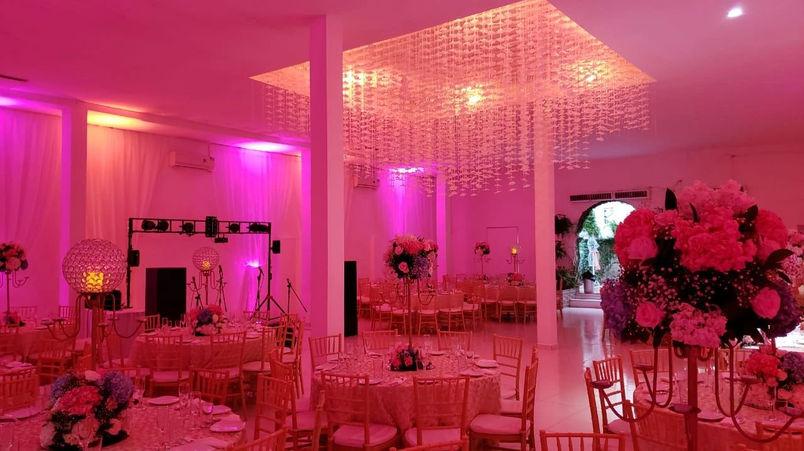

"Nos dedicamos a cumplir los sueños de cada persona"
Le brindamos el mejor espacio para organizar y desarrollar el evento de sus sueños. Por esto nuestro servicio es totalmente personalizado, al gusto y satisfacción de cada uno de nuestros clientes.
Patios de gran tamaño, aljibes y naranjos, techos de tejas españolas y rejas de hierro forjado son la primera imagen que encontramos al llegar a esta casona colonial.
En su interior, decorado con muebles y objetos de estilo, se percibe la temática vitivinícola por todas partes.
La excelente atención, la cocina fusión internacional autóctona de gran nivel, y la comodidad y el confort del siglo XXI convierten a este hotel colonial en una alternativa diferente y profesional que hará que sus invitados recuerden esta experiencia inolvidable.
Servicios
Cuenta con 4 salones, cada uno de ellos con carácter propio, historia y personalidad. De acuerdo a la disposición de los espacios sus salones tienen diferentes capacidades.
Rodeado por una galería colonial está el Patio Barricas, excelente opción para desarrollar un evento interno al aire libre.
La terraza es un agradable espacio exterior cubierto, integrado al jardín y a la piscina. Se puede contratar carpa, DJ, audio, pista de baile, ambientación, arreglos de flores, fotógrafos o animación.
Ofrece diferentes alternativas para desarrollar casamientos, jornadas de incentivos, conferencias, fiestas y cocktails. Cuenta con servicio de wedding-planner
|

|